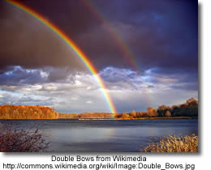

Copyright Friendly Music and Image Search Tools
Stay Online: Find LEGAL Images and Videos with Creative Commons Search (and Download YouTube, etc, with Zamzar.com) by Clay Burell of Beyond School
 A number of copyright-friendly archives are now available. The sources include government archives offering liberal use, media in the public domain, and collections of material posted by their creators with the definite purpose of sharing their work or seeing it grow and mix. Creative Commons is a license that allows creators to maintain a copyright while allowing users the right to reuse, reproduce, and change software or files.
A number of copyright-friendly archives are now available. The sources include government archives offering liberal use, media in the public domain, and collections of material posted by their creators with the definite purpose of sharing their work or seeing it grow and mix. Creative Commons is a license that allows creators to maintain a copyright while allowing users the right to reuse, reproduce, and change software or files.
Joyce Valenza posted the following list of her personal favourite copyright friendly archives:
Images

- Flickr's Creative Commons Pool: Browse through the images provided by Flickr users who have chosen to offer their work under a Creative Commons license
- openphoto: Free stock images. Use categories on the right to browse or click on search in the top bar
- US Government Photos and Multimedia Most materials in the public domain, but read the disclaimers.
- Wikimedia Commons: a database of 1,815,754 freely usable media files to which anyone can contribute.
- Common Content: an open catalog of Creative Commons licensed content
- Creative Commons Search Flickr, Yahoo!, Google, OWL Music Search, SpinXpress, and BlipTV to "find Creative Commons-licensed media that you can legally share and reuse for free"
- Pics4Learning Copyright friendly images for education
- MorgueFile "provides the public and creative community with free raw photo materials"
-
flickrcc A great photo sharing site for creative commons photos. You can also edit photos from within the site
- Flickr Storm - another Flickr search tool
10 Places to Find Free Images Online and Make Your Content More Linkable
There are some differences in the types of images that are available online, like some images are free and others are rights protected. Understanding the differences, as well as ten of the most popular places to find free images online, allows you to make your website more attractive.
Images Canada
All images can be reproduced, in print and/or digital format, for non-commercial purposes. The images must not be altered or manipulated in any way and proper " Credit " credit must accompany the images.
Internet for Image Searching
An excellent tutorial on how to use the Internet to find copyright cleared images for your work, quickly and efficiently.
Music
- Shambles: Sound Effects and Music Comprehensive portal collection by Chris Smith
- Educational CyberPlayGround: Get Music Downloads Links to portals and useful guidance
- Open Source Audio from the Internet Archive
- Incompetech Royalty Free Music
- Opsound Copyright friendly sound "Listeners are invited to download, share, remix, and reimagine."
- Partners in Rhyme: Free Sound Effects
- Partners in Rhyme: Free Music Loops
- Soundzabound Music Library
- OneMusic - from the BBC - Over 1,000 free music samples
- MusOpen - an online music library of copyright free music (public domain
- Freesound The Freesound Project is a collaborative database of Creative Commons licensed sounds. Freesound focusses only on sound, not songs.
Video, Images, Music and Sound
archive.org The Internet Archive is building a digital library of Internet sites and other cultural artifacts in digital form. Freely download images, movies, music
It is essential to check individual licensing notices
before publishing on the Web or broadcasting!